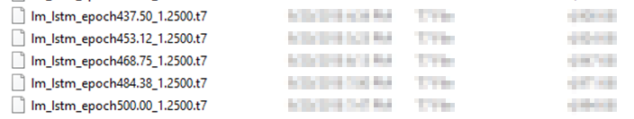
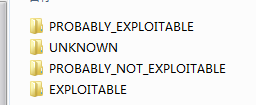

What have I done recently?
条评论最近几个月事情干的有点杂，来慢慢捋一捋。
首先关注到前些时间爆出VBScript的漏洞，影响很大。分析一下，觉得这2个漏洞理解起来很简单。所以尝试去fuzz VBScript。自己写了一些vb的语法规则，写的很鸡肋。因为要满足语法正确的情况下，尽可能的达到随机组合的目的。
重新看了下3月份的火狐的漏洞。顺手翻译了当时参考的文章，小有心得。
有兴趣老铁，贴个连接：https://xz.aliyun.com/t/2590考虑到毕设选题的事情，不知道干什么。和李哥交流一下，开始想法做机器学习相关的，所以参考了一些机器学习的文章。自己也测试了一番，用CPU跑，学习500轮次跑了一天的时间。靠(- -)

ps:人家用的titan X然后测试一下效果如何。只能说一般般
因为这个模型的代码是Lua写的，在其他项目的基础上完善了。当然，也就更复杂了。代码，算法，看不懂。所以 pass 掉。至于毕设，后来有另外的打算。上面哪些东西，就花了几个月时间。中间断断续续出现了各种各样的事。
接着就是 jet_oob 的漏洞。根据ZDI上面的公告，最近在试着挖掘数据库文件的漏洞。
倒是除了不少crash。

尝试提交了一个看起来比较有价值的漏洞。